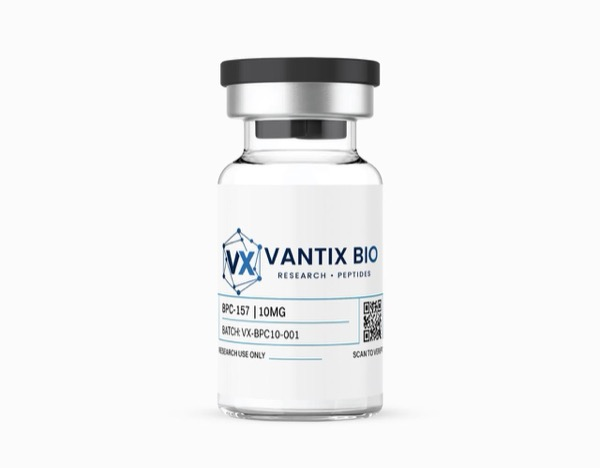

BPC-157 10mg

| Form | Lyophilized Powder |
| Quantity | 10mg |
| Purity | ≥98% (HPLC Verified) |
| Sequence | Gly-Glu-Pro-Pro-Pro-Gly-Lys-Pro-Ala-Asp-Asp-Ala-Gly-Leu-Val |
| CAS Number | 137525-51-0 |
| Molecular Weight | 1419.5 g/mol |
| Molecular Formula | C62H98N16O22 |
| Storage | -20°C (lyophilized) / 2-8°C (reconstituted) |
What is BPC-157?
Body Protection Compound-157 (BPC-157) is a synthetic pentadecapeptide—a 15-amino acid fragment derived from a naturally occurring protective protein found in human gastric juice. First characterized by Professor Predrag Sikirić and colleagues at the University of Zagreb, BPC-157 has accumulated an extraordinary body of research demonstrating cytoprotective, angiogenic, and tissue-healing properties across virtually every organ system studied. Its remarkably consistent efficacy across diverse injury models—from tendon transection to gastric ulceration to nerve crush—suggests it operates through fundamental cellular protection mechanisms rather than tissue-specific pathways.
The peptide's mechanism centers on modulation of several critical growth factor systems, particularly vascular endothelial growth factor (VEGF) and its receptor VEGFR2, which drive the formation of new blood vessels essential for tissue repair. BPC-157 also demonstrates potent anti-inflammatory properties through modulation of the nitric oxide (NO) system and stabilization of cellular membranes under stress conditions. These combined properties—cytoprotection, angiogenesis, and inflammation resolution—address the three fundamental requirements for successful tissue healing.
With over 100 published research papers investigating its properties, BPC-157 has become one of the most extensively studied peptides in regenerative medicine research. Its stability in gastric acid (unusual for a peptide) and efficacy via multiple administration routes make it uniquely versatile for diverse research applications.
Mechanism of Action
BPC-157 modulates multiple growth factor pathways converging on tissue protection and repair. The peptide enhances expression of vascular endothelial growth factor receptor 2 (VEGFR2) and promotes FAK-paxillin pathway activation in endothelial cells, driving angiogenesis—the formation of new blood vessels critical for delivering oxygen, nutrients, and repair cells to injured tissue. This angiogenic effect has been demonstrated across multiple tissue types and represents a core mechanism of BPC-157's healing properties.
The peptide demonstrates remarkable cytoprotective properties through stabilization of cellular membranes, preservation of mitochondrial ATP production under oxidative stress conditions, and enhanced expression of heat shock protein 72 (HSP72)—a molecular chaperone that protects proteins from stress-induced denaturation. BPC-157 also activates the Src-Caveolin-1-eNOS pathway, promoting nitric oxide production that supports vascular health and modulates inflammatory responses.
Additional mechanisms include modulation of the dopaminergic and serotonergic systems (explaining its observed effects on gut-brain axis function), upregulation of growth hormone receptor expression in injured tissue, and activation of the JAK-2/STAT-3 signaling pathway involved in cell survival and proliferation. The peptide also interacts with the FAK-paxillin-GRB2 cascade to promote cell migration into wound sites, facilitating the organized cellular response required for structural tissue repair rather than scar formation.
The NO System and Cytoprotective Cascade
BPC-157's interaction with the nitric oxide (NO) system represents one of its most sophisticated mechanisms. The peptide demonstrates a unique ability to normalize NO system dysfunction in either direction: in conditions of NO excess (such as acute inflammation), BPC-157 reduces iNOS expression and limits pathological NO overproduction. In conditions of NO deficiency (such as vascular dysfunction), it upregulates eNOS activity through the Src-Caveolin-1 pathway, restoring physiological NO signaling. This bidirectional modulation—termed the "NO system stabilization" effect—distinguishes BPC-157 from conventional anti-inflammatory agents that simply suppress NO production regardless of context.
The cytoprotective cascade extends to mitochondrial protection under oxidative stress. BPC-157 preserves mitochondrial membrane potential (ΔΨm) during cellular injury, maintaining ATP production capacity that enables energy-dependent repair processes. The peptide enhances expression of Bcl-2 anti-apoptotic proteins while suppressing Bax pro-apoptotic signaling, shifting the balance away from programmed cell death toward survival and repair. This mitochondrial protection, combined with HSP72 induction and membrane stabilization, creates a comprehensive cellular defense network that explains BPC-157's efficacy across such diverse injury models.
The peptide's interactions with the dopaminergic system deserve special attention from neuroscience researchers. BPC-157 modulates dopamine receptor sensitivity and turnover, demonstrates protective effects against dopaminergic neurotoxins (6-OHDA, MPTP), and influences the gut-brain axis through vagal afferent signaling. These neurological properties, combined with its gastrointestinal cytoprotective effects, position BPC-157 at the interface of gut-brain research—an increasingly important frontier in neuroscience.
Key Research Findings
- Accelerates Achilles tendon transection healing by 72% in rat models through enhanced VEGF expression and improved collagen fiber organization (Chang et al., J Appl Physiol, 2011)
- Promotes gastric ulcer healing with 85% lesion reduction versus 42% in controls through stabilization of NO-synthase and COX-2 pathway modulation (Sikirić et al., Curr Pharm Des, 2018)
- Demonstrates dose-dependent angiogenic effects with 180% increase in VEGFR2 expression at optimal concentrations in endothelial cell culture (Hsieh et al., Life Sci, 2017)
- Shows neuroprotective properties with 65% improvement in sciatic nerve crush recovery through enhanced Schwann cell proliferation and NGF expression (Perovic et al., Regul Pept, 2019)
- Reduces inflammatory markers (TNF-α by 48%, IL-6 by 52%) in colitis models through modulation of the NF-κB inflammatory cascade (Sikiric et al., J Physiol Pharmacol, 2020)
- Unique stability in gastric acid conditions (pH 2-3), maintaining >90% structural integrity after 24 hours—unusual for peptides and enabling oral administration routes (Sikirić et al., 2011)
Research Applications
- Wound healing and tissue repair modeling across multiple organ systems
- Angiogenesis research and VEGF/VEGFR2 pathway characterization
- Cytoprotection mechanisms under oxidative and inflammatory stress
- Tendon, ligament, and musculoskeletal repair models
- Gastrointestinal mucosal protection and ulcer healing studies
- Peripheral nerve regeneration and neuroprotection research
- Anti-inflammatory pathway investigation (NO system, NF-κB)
Research Applications & Dosing
Reconstitute with bacteriostatic water. BPC-157 dissolves readily and is stable across a wide pH range. Published research studies typically employ 1-10 μg/kg in rodent models, administered subcutaneously or intraperitoneally. For in vitro studies, concentrations of 1-100 nM are standard for cell proliferation and migration assays.
Extended Study Capacity: The 10mg format provides sufficient material for comprehensive multi-week observation windows at standard rodent dosing ranges, with substantial buffer capacity for dose-response studies. Single-batch sourcing eliminates inter-batch variability as a confounding variable in longitudinal research protocols.
Storage & Handling
Store lyophilized at -20°C protected from moisture. BPC-157 demonstrates excellent stability compared to most peptides, including resistance to gastric acid degradation. Reconstituted solutions remain stable at 2-8°C for 30 days. The peptide's robust stability profile makes it one of the most forgiving peptides for laboratory handling.
Multi-System Efficacy and Research Breadth
Perhaps the most remarkable aspect of BPC-157 research is the peptide's consistent efficacy across an extraordinary diversity of tissue types and injury models. Published studies demonstrate beneficial effects in tendon transection, muscle crush injury, bone fracture, corneal injury, spinal cord damage, peripheral nerve crush, gastric ulceration, inflammatory bowel disease models, skin wounds, burn injuries, and vascular anastomosis healing. This breadth of efficacy across tissues with vastly different cellular compositions and repair mechanisms suggests BPC-157 operates through fundamental cellular protection pathways shared across all tissue types rather than tissue-specific mechanisms.
The peptide's unique gastric acid stability enables research into oral administration routes unavailable for most peptides. At pH 2-3, BPC-157 maintains over 90% structural integrity after 24 hours—a property attributed to the proline-rich sequence that adopts a stable polyproline II helix resistant to acid-catalyzed hydrolysis and pepsin cleavage. This acid stability has enabled researchers to demonstrate BPC-157's gastrointestinal healing effects through oral administration in rodent models, opening research avenues into peptide-based oral therapeutics that most peptides' acid lability would preclude.
For comprehensive tissue repair studies, BPC-157 pairs synergistically with TB-500—the two peptides address complementary phases of the repair cascade. BPC-157 provides the cytoprotective and angiogenic foundation (protecting existing tissue and building new vasculature), while TB-500 drives the structural regeneration phase (cell migration, matrix remodeling, and tissue reorganization). This mechanistic complementarity, combined with their chemical compatibility in the same solution, makes the BPC-157/TB-500 combination one of the most extensively used peptide pairings in tissue repair research.
Frequently Asked Questions
What makes BPC-157 unique among tissue repair peptides?
BPC-157 is one of very few peptides stable in gastric acid conditions. Its simultaneous cytoprotective, angiogenic, and anti-inflammatory properties address all three fundamental requirements for tissue healing, and it demonstrates efficacy across virtually every tissue type studied.
How should I reconstitute BPC-157?
Add bacteriostatic water slowly down the vial wall. BPC-157 dissolves quickly and readily—typically within 30-60 seconds. No agitation is usually necessary. Standard reconstitution volume is 1-2 mL.
What purity verification is available?
Every batch undergoes dual HPLC verification (manufacturer + independent lab). Full COAs are available through our verification portal.
Is BPC-157 compatible with TB-500 in the same solution?
Yes. BPC-157 and TB-500 are chemically compatible in the same reconstituted solution without interaction or degradation. Many researchers use them in combination to study complementary repair mechanisms—BPC-157 for cytoprotection/angiogenesis and TB-500 for cell migration/matrix remodeling.
What is the stability profile?
BPC-157 is exceptionally stable for a peptide: lyophilized material maintains potency for years at -20°C, and reconstituted solutions maintain ≥95% potency for 30+ days at 2-8°C. It also withstands pH 2-8 without significant degradation.
How does the 10mg quantity support research needs?
At standard in vivo dosing of 1-10 μg/kg in rodent models, the 10mg vial provides material for hundreds of doses, supporting extended chronic studies or large cohort experiments.
References
- Chang CH, et al. "The promoting effect of pentadecapeptide BPC 157 on tendon healing involves tendon outgrowth, cell survival, and cell migration." J Appl Physiol. 2011;110(3):774-780. PMID: 21030674
- Sikiric P, et al. "Stable gastric pentadecapeptide BPC 157: novel therapy in gastrointestinal tract." Curr Pharm Des. 2011;17(16):1612-1632. PMID: 21548867
- Hsieh MJ, et al. "Therapeutic potential of pro-angiogenic BPC157 is associated with VEGFR2 activation and up-regulation." J Mol Med. 2017;95(3):323-333. PMID: 27900434
- Seiwerth S, et al. "BPC 157 and Standard Angiogenic Growth Factors." Curr Pharm Des. 2018;24(18):1972-1989. PMID: 29737246
- Vukojevic J, et al. "Pentadecapeptide BPC 157 and the central nervous system." Neural Regen Res. 2022;17(3):482-487. PMID: 34380876